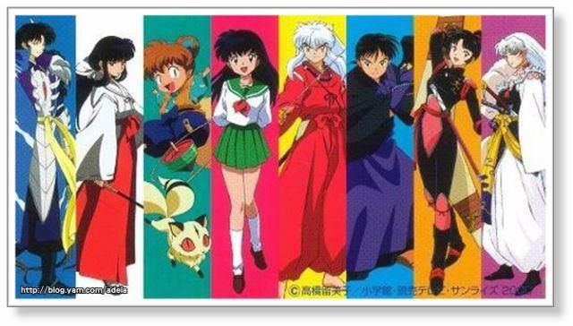
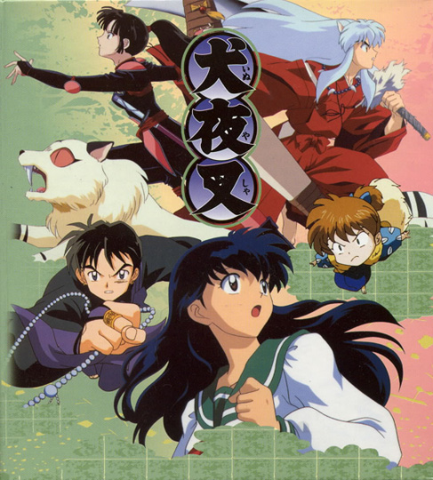

Directed by: Masashi Ikeda and Yasunao Aoki
Produced by: Michihiko Suwa and Hideyuki Tomioka
Written by: Katsuyuki Sumisawa

Welcome to the Inuyasha fan page!
Description
Inuyasha is a Japanese TV series called anime. The TV series started in October of 2000 and ended in September of 2004 with 167 episodes and 6 seasons and the episodes are about 20 minutes long, this was the first act.
There was a second act that started in October of 2009 called Inuyasha: The Final Act which had 26 episodes and ended in March of 2010, this was to finish off the manga series.
Characters
There are a total of 6 main characters who are constantly in the series:
Kirara
Sango
Shippo
Kagome
Miroku
Inuyasha

There are a few characters that are not necissarily main characters but they appear quite often:
Kikyo
Sesshomaru
Jaken
Rin
A-Un
Kohaku
Koga
Naraku
Other Media
There are other forms of Inuyasha besides the TV series. Four different movies have been made along with video games, soundtrack CDs, novels, and live-action roleplay.